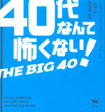
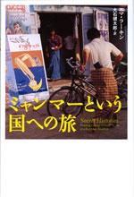
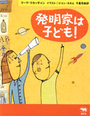
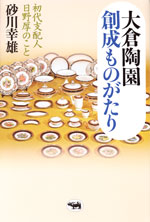
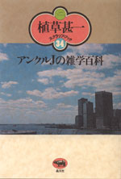
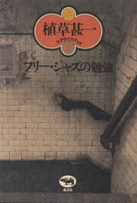
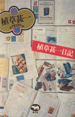

 |
サブカル・ビジネス |
| 40代なんて怖くない！ | |
| Ｊ・アルバートソン、Ｌ・スティール、Ｊ・Ｖ・ギーソン 三砂博訳 高平哲郎・監修 | |
| A5変型 224頁 | |
| 定価1785円（本体 1700円） | |
| 4-7949-2363-5 C0098 | |
| 40代は人生の曲り角？ いいえ、Ｊ・デップもガンジーも40代で成功しました。あなたも諦めないで！ 本書は米国の調査を基にした40代を賢く生きるためのデータブック。マドンナやＧ・クルーニーはどんな40代ライフを送っているのか。ブッシュ大統領が40代でしでかしたことは。40代のセックスの頻度は。出産と離婚率、昇進の確率は。希望と、場合によっては現実逃避の機会をお届けする一冊！ |
 |
アジア・ノンフィクション |
| ミャンマーという国への旅 | |
| エマ・ラーキン 大石健太郎 訳 | |
| 四六判 368頁 | |
| 定価3150円（本体3000円） | |
| ４-7949-6676-8 C0098 | |
| 『一九八四年』の作家ジョージ･オーウェルは、1920年代、警察官としてイギリスの植民地ビルマで勤務している。80年後、オーウェルの足跡を追うジャーナリストがビルマで見たのは、『一九八四年』の悪夢が現実化した国だった──。思想統制･密告･投獄･検閲が日常化し、人びとが圧政の恐怖にあえぐ軍事政権下の現実に迫るノンフィクション。 |
| ノンフィクション・医療 | |
| 命のアサガオ 永遠に | |
| 丹後まみこ 神津伸子 | |
| 四六判 228頁 | |
| 定価1680円（本体1600円） | |
| 4-7949-6679-2 C0047 | |
| 白血病で逝った７歳の息子が残した朝顔の種は、骨髄バンクの活動とともに命の尊さを伝えるメッセージとなって新潟から世界へ広がった。息子の死から10年。がんに侵され、息子と同じ抗がん剤の副作用と闘いつつ、命の限り種を配り続けることを誓う母親の姿を通して、家族のあり方、生きる意味を問う。さわやかな勇気あふれる感動の本。 |
 |
ヤングアダルト |
| 発明家は子ども！ | |
| マーク・マカッチャン ジョン・カネル＝絵 千葉茂樹訳 | |
| A5変型 96頁 | |
| 定価1365円（本体 1300円） | |
| 4-7949-2724-X C8040 | |
| 科学の発展に貢献し、社会に影響を与えた子どもたちはたくさんいる。彼らはただ頭がよかったり、想像力がたくましいだけじゃない。共通するのは、自分自身を信じて、とにかく一生懸命に取り組んだこと。SF作家のアイザック・アシモフ、テレビの発明者、点字を考えついた人……9人の科学者や作家の子ども時代からの活躍を、楽しいイラストとともに紹介。 |
 |
ビジネス・ノンフィクション |
| 大倉陶園創成ものがたり 初代支配人日野厚のこと |
|
| 砂川幸雄 | |
| 四六 判 272頁 | |
| 定価2310円（本体2200円） | |
| 4-7949-6682-2 C0095 | |
| 大倉陶園は1919（大正８）年に創業され、現在その製品は世界中で高い評価を受けている。とくに、初期の作品は「オールド大倉」と呼ばれ、コレクターの垂涎の的である。大倉陶園を世界のトップブランドに育てあげた初代支配人・日野厚の生涯をたどり、それまでの日本にはなかった最高級の洋食器をつくろうとした人々の苦闘を描く。 |
 |
建築・評伝 |
| 前川國男 賊軍の将 |
|
| 宮内嘉久 | |
| 四六判 240頁 | |
| 定価1890円（本体1800円） | |
| 4-7949-6683-0 C0052 | |
| 日本の近代建築を代表する建築家前川國男（1905-1986)のはじめての評伝。紀伊国屋書店新宿本店。東京文化会館。神奈川県立図書館・音楽堂。国立国会図書館新館。などなど。前川の設計した建築はいまも多くの人々に親しまれている。その生涯と仕事をたどり、近代建築のめざしたものとは何だったのかをあらためて問いかける問題作。 |
 |
エッセイ |
| 植草甚一スクラップ・ブック 34巻 第12回配本 アンクルＪの雑学百科 |
|
| 植草甚一 | |
| 四六判 224頁 | |
| 定価1470円（本体1400円） | |
| 4-7949-2594-8 C0395 | |
| 文学・映画・ジャズ・演劇・美術・ファッション・スポーツ──海外の新聞や雑誌を読みまくり、世界のエッセンスをとり出す。様々な分野で、いま何が起こっているのか？ 鋭い感性のアンテナで捉えた話題を、鮮やかな手つきで紹介する、コラムニストＪ・Ｊの真骨頂。これぞ、“雑学”の宝庫！（解説・平野甲賀） |
 |
ジャズ |
| 植草甚一スクラップ・ブック 37巻 第12回配本 フリー・ジャズの勉強 |
|
| 植草甚一 | |
| 四六判 244頁 | |
| 定価1470円（本体1400円） | |
| 4-7949-2597-2 C0373 | |
| ジャズの音はどんどん新しくなってゆく。アルバート・アイラー、アーチー・シェップ、サン・ラなど、ジャズ・アヴァンギャルド世界からの内部の声に耳を傾けよう。ニュー・ブラック・ミュージックに思いっきりのめりこんだ、Ｊ・Ｊ氏の熱気あふれるレポート。（解説・井上光晴） |
 |
エッセイ |
| 植草甚一スクラップ・ブック 39巻 第12回配本 植草甚一日記 |
|
| 植草甚一 | |
| 四六判 260頁 | |
| 定価1470円（本体1400円） | |
| 4-7949-2599-9 C0395 | |
| 一九四五年、連日の空襲のもと、主任として映画館を守りつづけながら、面白い本を求めて古本屋を巡り歩くＪ・Ｊ氏──。一九七〇年、試写に、コンサートに、原稿書きにと、忙しい毎日のなか、散歩と本探しに精を出すＪ・Ｊ氏──。日記は最高のノンフィクションだ。ノートやメモ帖から精選されたＪ・Ｊ氏の日録。（解説・鶴見俊輔） |